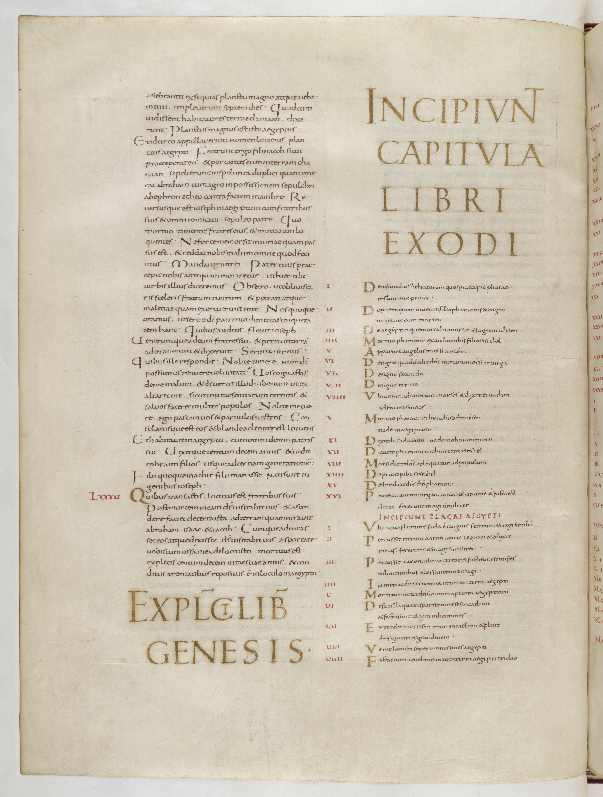
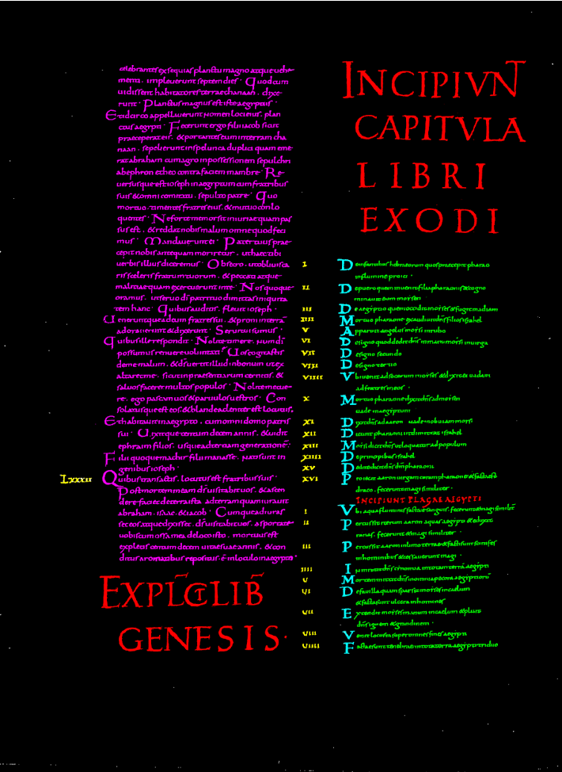

DOBiPS - Data Oriented Biblical Paratexts Studies
The project DOBiPS - Data Oriented Biblical Paratexts Studies was awarded for the 2023-2025 biennium to the research units of the University of Udine and the University of Cassino and Lazio Meridionale under the competitive PRIN PNRR call - National Recovery and Resilience Plan, Mission 4 “Education and Research”, funded by the European Union - NextGenerationEU (protocol no. P2022ZW4AW).
The project was developed in partnership with the Interdepartmental Centre AI4CH - Artificial Intelligence for Cultural Heritage of the University of Udine and the Laboratorio L.I.Be.R. - Libro e Ricerca of the University of Cassino and Lazio Meridionale.
Project Overview
DOBiPS investigated the transmission and reception of Latin biblical paratexts, with particular focus on the capitula (chapter headings) of the Octateuch in the Tours, Atlantic, and Beneventan Bibles. The project combined traditional codicological, palaeographical, and philological methods with digital modelling of research objects and data, in dialogue with database design, artificial intelligence, and document analysis.


The primary object of investigation was the paratexts of medieval biblical manuscripts. While theoretical reflection on paratexts has been shaped by modern literary theory, the study of manuscript traditions requires a recontextualisation of these models. In medieval biblical codices, textual authority and material transmission operate within a framework marked by the uniqueness of each manuscript witness and by the historical mobility of textual organisation.
Paratextual elements - such as capitula, tituli, rubrics, marginal annotations, script and decoration hierarchies - functioned as mediators between the biblical text and its readers across different historical contexts. Their analysis makes it possible to observe how the apparent stability of Scripture coexisted with continuous processes of material adaptation and functional transformation. The project addressed this dialectic through three interconnected research axes: digital editions, data modelling and database construction, and computational experimentation.
The research developed along three interconnected axes: digital editions, database and data modelling, and AI-based layout analysis.
Digital Editions of the Capitula of the Octateuch
The first major outcome of the project was the production of open-access digital editions of the capitula transmitted in the Tours, Atlantic, and Beneventan Bibles.
The two research units jointly defined a shared analytical protocol specifying criteria for identifying and delimiting paratextual units, recording variants, aligning textual traditions, and documenting the relationship between paratext and biblical text. Two complementary encoding environments were adopted:
Tours Bibles (University of Udine)
The capitula were encoded in XML-TEI, allowing structured representation of hierarchical elements, explicit modelling of textual variants, and interoperability with digital philological tools. The editions were visualised using Edition Visualization Technology (EVT), an open source tool specifically designed to create digital editions from TEI XML-encoded texts.
The criteria adopted for the XML-TEI editions were documented in a working paper deposited on Zenodo.
Access to the individual digital editions is provided below:
+ digital edition of some new series of capitula:
Beneventan Bibles (University of Cassino)
The capitula were encoded in MauroTex. This system produced immediate HTML renderings and parallel PDF outputs, enabling direct browser-based consultation and controlled typographical presentation.
The MauroTex encoding guidelines are available at this page, where the PDF files generated from the encoding can also be downloaded.
Access to the individual digital editions is provided below:
The coexistence of XML-TEI and MauroTex allowed a methodological comparison of encoding strategies. XML-TEI provided high structural granularity and interoperability, particularly suited to complex variant modelling. MauroTex offered a streamlined editorial workflow oriented toward stable publication and readability. The comparison clarified the advantages and limitations of each approach in relation to manuscript paratexts.
Due to the internal heterogeneity of the Atlantic Bibles tradition, characterised by book-specific textual families, the project will produce a digital repository collating variants against the reference text of de Bruyne rather than producing a conventional critical edition.
All editions and source files were made available in Open Access through the project GitHub repository.
Database and Data Modelling
The second research axis concerned the design and implementation of an open-access database of Latin biblical paratexts.
A formal ontology of paratextual elements was developed collaboratively and translated into an entity-relationship model. This work was carried out collaboratively by the two Operational Units, with the support of database and data-analysis specialists from the Data Science and Automatic Verification Laboratory of the University of Udine.
The resulting dataset, comprising nearly 8,000 entries and covering almost all ninth-century biblical codices together with a substantial number of later witnesses (especially Atlantic and Beneventan Bibles), was organised according to explicit and reproducible criteria.
Open Access consultation has been implemented through Google Sheets, in accordance with a minimal-computing and sustainability-oriented approach.
A prototype SQL version was also implemented to enable structured queries and integration into computational workflows.
Further details are provided in this paper.
Artificial Intelligence and Computer Vision
The third axis of the project explored the application of Artificial Intelligence and Layout Document Analysis to biblical manuscripts.
In collaboration with the Artificial Vision and Machine Learning Laboratory (University of Udine), the project prepared and released the U-Diads Bib dataset, segmented at pixel level and made available in Open Access.
Further details are provided in this paper.
Few-shot learning approaches were tested in order to identify and classify paratextual categories - such as titles, capitula, glosses, and other non-main-text elements - on the basis of limited training data.
The AVML Lab also organised international competitions on manuscript segmentation and layout recognition (ICDAR 2024 and ICDAR 2025), situating its work within broader research in document analysis.
Dissemination and Training
Project results were presented at international conferences and workshops in manuscript studies, digital philology, document analysis, and artificial intelligence. A final three-day intensive workshop on biblical manuscripts and digital tools was organised by the OU of Cassino and held at the University of Cassino and the Abbey of Montecassino, with accreditation for teacher training by the Italian Ministry of Education.
A complete list of publications related to the project is available here.
Research Team
University of Udine
Emanuela Colombi; Laura Casella; Laura Pani; Gian Luca Foresti; Margherita Filippozzi; Silverio Franzoni.
Collaborators: Andrea Brunello; Nicola Saccomanno; Claudio Piciarelli; Silvia Zottin; Axel De Nardin; Matteo Raffin.
University of Cassino and Lazio Meridionale
Roberta Casavecchia; Alessandra Peri; Gabriella Macchiarelli; Maddalena Sparagna.
Collaborators: Marilena Maniaci; Paolo D'Alessandro; Alessandro Gelsumini.